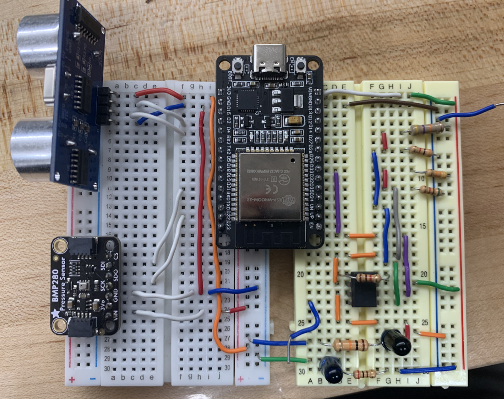
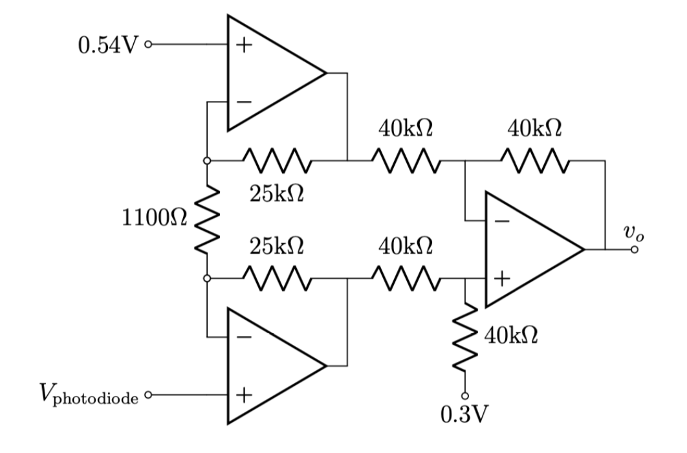

PC Air Cooling Sensor System
Sensors and Transducers Course Project
Home / Projects / PC Air Cooling Sensor System
Overview
Description
The project utilizes an ESP32, BMP280, HC-SR04, photodiode, and IR LED. The purpose of this project is to create a sensor that will monitor various factors of a desktop computer that would contribute to its air cooling. Specifically, the goal was to measure temperature, air flow, fan speed, and dust concentration.
- Regarding the air flow measurement, it is intended to use the BMP280’s air pressure reading. The BMP280 will also be used for the temperature reading.
- For the fan speed, the HC-SR04 ultrasonic distance sensor measures the number of pulses within a given time.
- Finally, to measure dust concentration, an infrared photodiode alongside an infrared light source will measure scattered light, with the photodiode pointed towards a space in which the emitted IR light can be scattered by dust particles.
Objectives
- Interfaced ESP-32 with Arduino IDE (C++)
- Implemented two integrated sensors (BMP280, HC-SR04)
- Designed an amplification circuit to amplify the sensor reading from the photodiode
- Applied software filtering (Kalman) to the raw results to account for noise.
- Calculated various output statistics through software
Pictures

